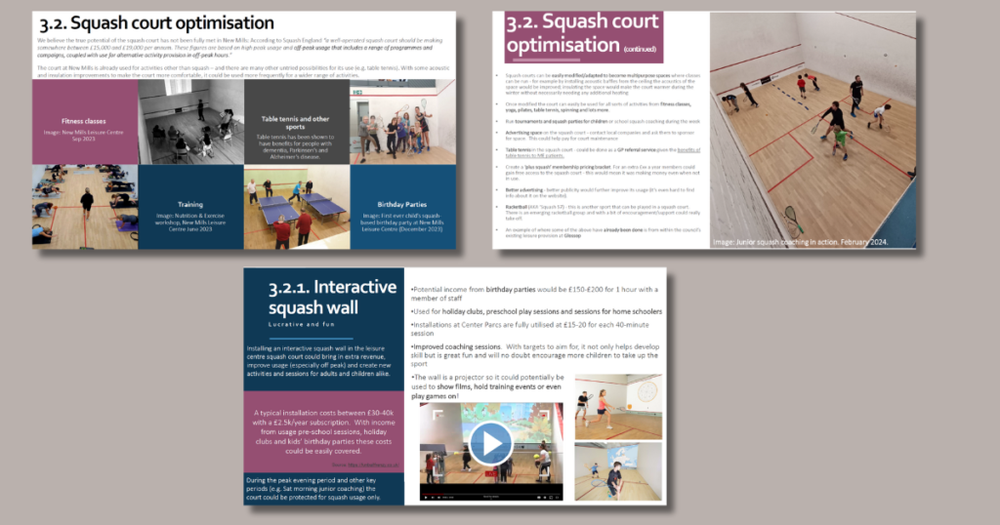

Finally, a year of campaigning has led to the High Peak Borough Council doing the right thing and consulting the people of New Mills, and leisure centre users on the redevelopment options. People have 6 weeks (from 29 Nov 2024-10 Jan 2025) to complete an online survey where they can express their views.
Firstly, what are the choices?
![Option 1 - no squash court, smaller sports hall, significant investment in energy savings, £2.5 million redevelopment investments, extended gym, extra fitness studio space and an extended NHS referral scheme.
Option 2 - no squash court, same sized sports hall, significant investment in energy savings, £3.67 million redevelopment investments, extended gym, extra fitness studio space and an extended NHS referral scheme.
Option 3 - keep squash court, same sized sports hall, significant investment in energy savings, no redevelopment investments, no extended gym, no extra fitness studio space and no extension of NHS referral scheme.](../wp-content/uploads/2024/11/Square-options-table-1024x1024.jpg)
As you can see:
- ✨Only option 3 saves the squash court✨
- Only options 2 and 3 save the full-sized sports hall
- All options involve a significant investment in energy saving measures
- Options 1 and 2 involve borrowing significant amounts of debt finance for the leisure centre redevelopments.
Sadly, the council have not provided any options that both develop the centre, and retain all of our much loved and well used facilities i.e. ‘something better’. In this blog we give you the complete low down (read on for more), but if you just want to get cracking, follow the link below 👇👇.
Some things to consider before you complete your consultation survey
Options 1 and 2 – think about:
It’s obvious that if you want extra gym space and fitness studio space, options 1 and 2 will appeal to you. However, between options 1 and 2, only option 2 saves the full-sized sports hall. This is a valuable community asset, which supports a very strong and valuable school sports programme, and multiple team sports. So, for those of you hesitating between options 1 and 2 we would urge you to back option 2.

Another reason you might want to select options 1 and 2 is because the council claim further developing the centre is their only pathway to financial sustainability and away from subsidisation. (They say this, even though we have been told that the Leisure Centre at New Mills currently makes money, so we assume the subsidies refer to My Active as a whole).
The council have not provided any evidence as to how they will pay back the multi-million pound loans involved under these options, or provided any data regarding the centre’s current finances.
It does seem like an enormous amount of money to pay back through extra fitness classes and gym subscriptions.

Could this investment result in higher gym membership? Could this investment make your council tax bill higher? The council have not said how the loans will be paid off or shared their business model.
Option 3 – think about…
Option 3 is the only way to save New Mills squash court. If you love squash, or want to stand in solidarity with the squash playing community, this is the only option available to you.
The council have never acknowledged the value of squash to the community and have consistently underplayed the statistics around squash usage. It might not be that profitable currently, but we know there are ways to boost this, via transforming the squash court into a truly multi-purpose space: As one campaigner put it – “you can do a fitness class in a squash court, you can’t play squash in a fitness studio”.
We have shared our ideas with the council about how we could retain the court, and how we could make it more profitable, but none of this is factored into their plans.

It’s easy to dismiss squash as a niche sport played by a few, but the fact is that this is a closely knit, thriving and growing community that has existed for just over 40 years. It is growing in popularity worldwide, and is set to be an Olympic sport in 2028.
New Mills has three teams, including a women’s team and runs 6 junior sessions every week. The club has self-funded 2 players to become coaches so that it can grow grassroots junior squash locally.
Failing to recognise the value of community assets such as New Mills squash court is how you break a community piece by piece – by undermining the little pockets of social cohesion that still exist…Then we wonder why issues such as male depression, and child inactivity are such huge problems.
Option 3 is also the only way to avoid taking out multi-million pound loans that will need to be paid back with interest. Option 3 is also the only way that we could remain open to better sources of finance in the future. Wouldn’t it be great if we could secure finance from a source (such as the lottery) that prioritises wellbeing outcomes over profitability?
Lastly, the council have called option 3 “no-investment” – this isn’t the full picture: There will still be hundreds of thousands of pounds invested into energy saving measures (solar panels and improved air handling unit) under option 3. This should improve efficiency and profits, even without the other investments.

Something better
Does it really have to be like this? With their sizeable budget, couldn’t the council have included an option that kept the squash court, full-sized sports hall and improved the leisure centre too? We think they could have done. If you agree, make sure you express your disappointment around the lack of options when you complete your consultation survey.
Have your say
Ultimately the choice is yours…read the above and make of it what you will. But whatever you do, please do engage in the consultation before the 10th of January.
Related content
Video
A look at how children in New Mills would be affected if the court were to close
Keeping the main sports hall is a must. I’ve been playing football there for over ten years on Tuesdays and Fridays with both of these organised football games running for much longer than this!
I have played football in the sports hall every week for 25 years..I play with guys who range from 18 to 65 years in age.. This really is what community and sport should be about. I was involved as a.kod with community funding for these.facilities.30 plus years ago.. It really is morally wrong to consider taking away this facility from the community.
We live in Marple so don’t have a High Peak Borough login to vote!
However, we DO use the sports hall regularly to play pickleball and pay the sports centre!
We would both vote for option 3!
I don’t think there is any requirement to login to the High Peak Borough Council website to respond to the survey. Perhaps the site was temporarily not working? Please give your feedback to HPBC, especially as a genuine New Mills Leisure Centre customer
Option 3 please. I visit New Mills to play squash from time to time. Squash is a great sport – you’re more likely to make friends and continue to play for tens of years than by going to a gym which can become boring. Squash also raises your heart rate higher and is gaining popularity.
Option 3 also seems to offer better value for money and offers more for local schools and youth sport.